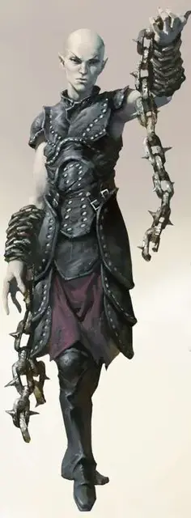

Теневой танцор
Shadow Dancer
Средний Гуманоид (Эльф), нейтральный

Класс Доспеха 15 (проклёпанный кожаный доспех)
Хиты 71 (13к8 + 13)
Скорость 30 футов
| мод | спас | ||
|---|---|---|---|
| СИЛ | 12 | +1 | +1 |
| ЛОВ | 16 | +3 | +6 |
| ТЕЛ | 13 | +1 | +4 |
| мод | спас | ||
|---|---|---|---|
| ИНТ | 11 | +0 | +0 |
| МДР | 12 | +1 | +1 |
| ХАР | 12 | +1 | +1 |
Навыки Скрытность +6
Иммунитет к урону некротическая энергия
Иммунитет к состояниям очарование, истощение
Чувства тёмное зрение 60 футов, пассивное Восприятие 11
Языки Общий, Эльфийский
Опасность 7 (2900 опыта)
Бонус мастерства +3
Среда обитания Город, Лес, Подземье
Особенности
Наследие фей. Теневой танцор совершает с преимуществом спасброски от очарования, и магия не может его усыпить.
Теневой прыжок. Теневой танцор бонусным действием может телепортироваться на расстояние до 30 фт. в свободное пространство, которое он может видеть. Обе точки телепортации должны находиться в тусклом свете или во тьме. Теневой танцор может использовать эту способность между атаками оружием и другими совершаемыми им действиями.
Действия
Мультиатака. Теневой танцор совершает три атаки цепью с шипами
Цепь с шипами. Рукопашная атака оружием: +6 к попаданию, досягаемость 10 фт., одна цель. Попадание: 10 (2к6 + 3) колющего урона, и цель должна преуспеть в спасброске Ловкости Сл 14. В противном случае она пострадает от одного дополнительного эффекта по выбору теневого танцора:
• Цель становится схваченной (Сл высвобождения 14), если она среднего или меньшего размера. До завершения захвата, цель Опутана и теневой танцор не может схватить другую цель.
• Цель сбивается с ног.
• Цель получает 22 (4к10) урона некротической энергией.
Описание
Те, кто сражался с теневыми танцорами, описывают это, как борьбу с живой тьмой. Каждая тусклая ниша и затенённый угол – это место, откуда могут появиться гибкие и акробатичные теневые танцоры, чтобы напасть на свою добычу. Используя подобную тактику, они нападаю на своих врагов со всех сторон, используя шквал запутывающих цепей, что крепко держат и разъедают плоть. Когда их жертва беспомощна, приближаются другие и убивают её. Затем, они ищут у уже погибшей жертвы различные безделушки, всё, что посчитают ярким и красочным по возвращению в своё мрачное Царство Теней.
В вечном мраке сумрака живёт общество, прислуживающее Королеве Воронов. Они были принесены в это тёмное царство в прошлые века так давно, что теперь они идеально адаптировались к этой угрюмой среде, как физически, так и умственно.
Хранители душ. Шадар-кай наблюдает за Царством Теней и материальным миром, разыскивая души и трагические события, которые могут порадовать их божество. По слухам, они способны повлиять на мировые события трагическим образом ради её удовольствия. Тем не менее, королева Ворона представляет загадку даже для своих самых преданных последователей. Усилия шадар-кай вознаграждаются только неопределёнными предзнаменованиями, которые они интерпретируют, как только могут.
Проклятые эльфы. Шадар-Кай когда-то были эльфами, но миллиарды лет воздействия изнурительной среды обитания Царства Теней сделали их печальными и угрюмыми созданиями. В этом измерении, они имеют вид высохших эльфов: светлые волосы, морщинистая серая кожа и опухшие суставы дают им трупоподобный внешний вид. Они выглядят более молодыми в других планах, но их кожа всегда сохраняет свою мертвецкую бледноту. Они надевают тёмные плащи и тяжёлые маски, ненавидят зеркала и избегают тех вещей, что напоминают им о собственном возрасте.
Теневой танцор. Несмотря на то, что он сильный боец, ткач мрака часто остаётся скрытым в тени, пристально наблюдая и влияя своим присутствием на своих жертв. Его тёмная энергия укореняется в сердцах, заставляя тех, кто находится в его гнетущей ауре, почувствовать приближение смерти. Одного этого мучения хватает чтоб доставить удовольствие своей хозяйке, Королеве Воронов, но, если он обнаружен, ткач мрака использует свою теневую магию чтобы превратить своих врагов в жуткие трупы.